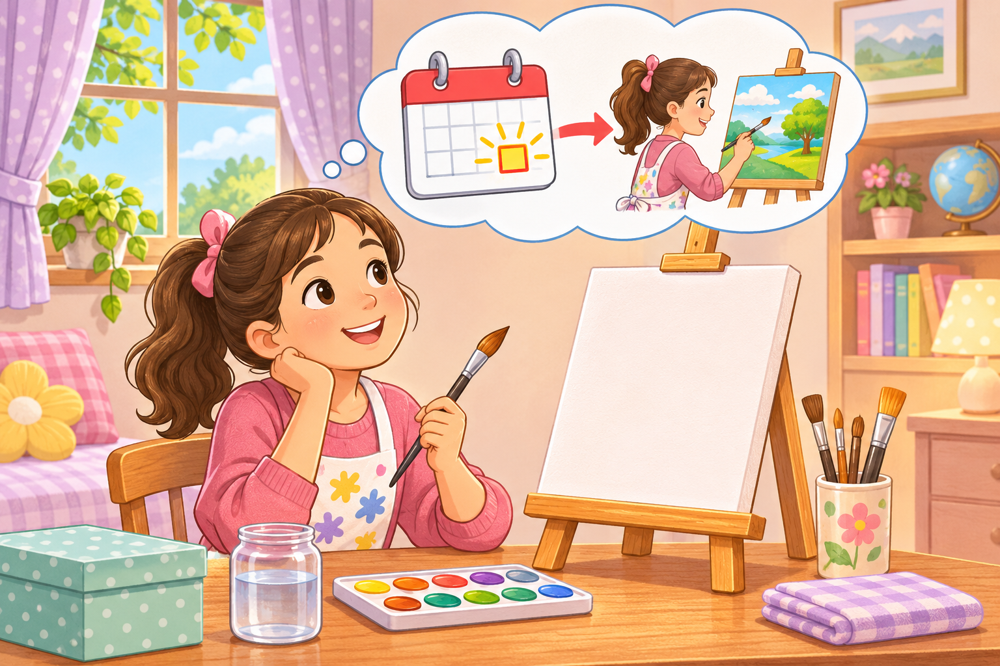
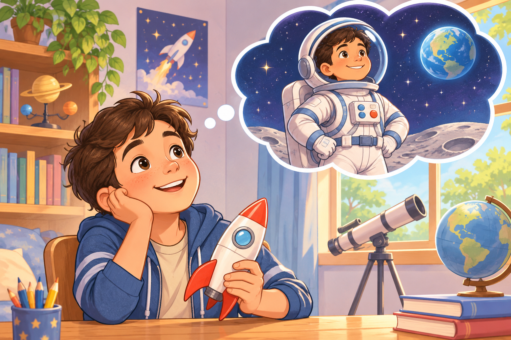

Be Going To: Future Plans
Read the rules and write the examples in your notebook. ✏️
1. When do we use it?
We use be going to to talk about plans for the future.
I am going to visit a museum tomorrow.
Jane is going to be an artist when she grows up.


2. Choose am, is or are
The form of be changes with the subject.
| Subject | Be | Example |
|---|---|---|
| I | am | I am going to draw. |
| He / She / It | is | She is going to draw. |
| You / We / They | are | They are going to draw. |
3. Positive sentences 😊
I am going to paint a picture.
Tom is going to play the guitar.
They are going to make a model.
✓ She is going to paint. ✗ She is going to
Short forms: I am → I’m | she is → she’s | they are → they’re
4. Negative sentences 🚫
Put not after am, is or are.
I am not going to watch TV tonight.
Jane is not going to be a dancer.
They are not going to visit the gallery today.
Short forms: is not → isn’t | are not → aren’t
He isn’t going to sing in the concert.
We aren’t going to play outside.
I’m not going to stay at home.
5. Questions and short answers ❓
Put Am, Is or Are before the subject.
Are you going to paint today?
Yes, I am. / No, I’m not.
Is she going to be a designer?
Yes, she is. / No, she isn’t.
Are they going to dance?
Yes, they are. / No, they aren’t.
✓ Yes, she is. ✗ Yes, she is going to.
6. Future time expressions 🗓️
These words can tell us when the plan is.
We are going to visit the museum this weekend.
I am going to be a photographer when I grow up.
7. Let’s Write! ✏️
Write the answers in your notebook.
A. Complete with am, is or are.
- Jane ______ going to paint a picture.
- Tom and Jane ______ going to visit a museum.
- I ______ going to make a model.
B. Complete the sentences. Use the words in brackets.
- Tom __________________ an astronaut when he grows up. (be)
- Jane __________________ the guitar tonight. (not play)
- ______ they going to __________________ tomorrow? (dance)
C. Write about your plans.
- Write one positive sentence about tomorrow.
- Write one negative sentence about tonight.
- Ask a friend a question about this weekend. Write a short answer.
- What are you going to be when you grow up? Write one sentence.